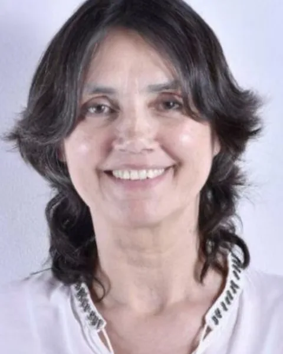
Início / LegadoActivo
Distinções
LegadoActivo
Uma distinção que reconhece um legado vivo e uma pertença que transcende o tempo.
Esta Distinção não fixa um cargo nem impõe uma função, mas reconhece um legado vivo, uma presença disponível e uma pertença que transcende o tempo e as circunstâncias.
Como Mentor(a) de Legado Ativo, a sua palavra será referência, a sua experiência será memória orientadora e a sua presença, quando se tornar necessária, será cuidado do propósito e do espírito desta Rede.
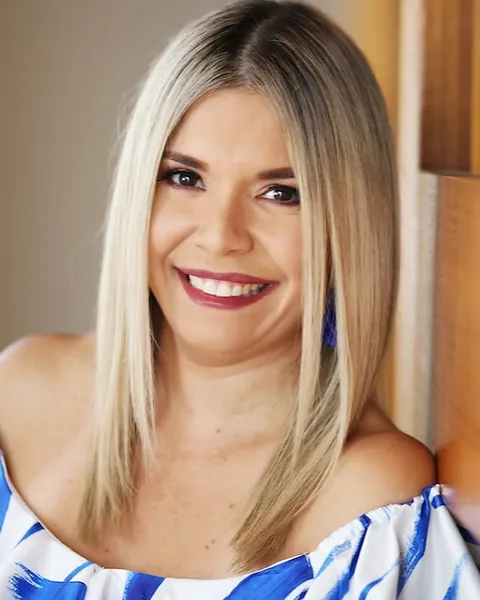
Bárbara Flores
Estados UnidosVer diploma (PDF)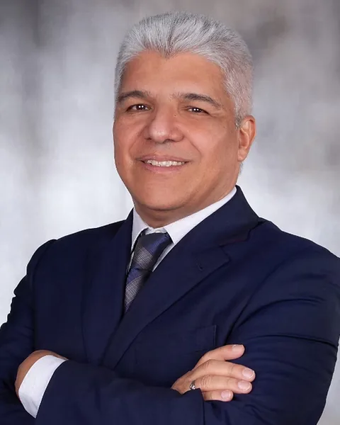
Juan Carlos Cadavid
Colômbia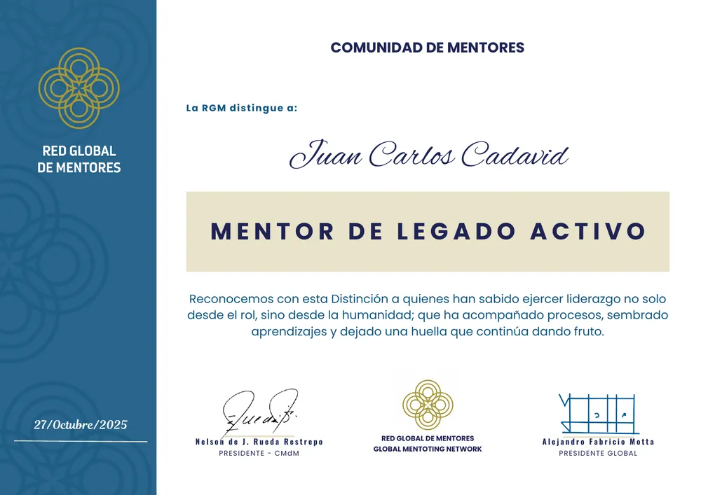
Ver diploma (PDF)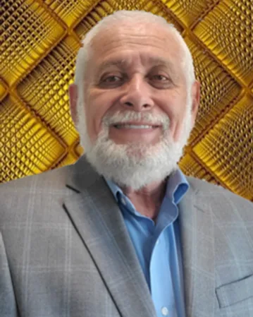
Serafín Contreras
Estados Unidos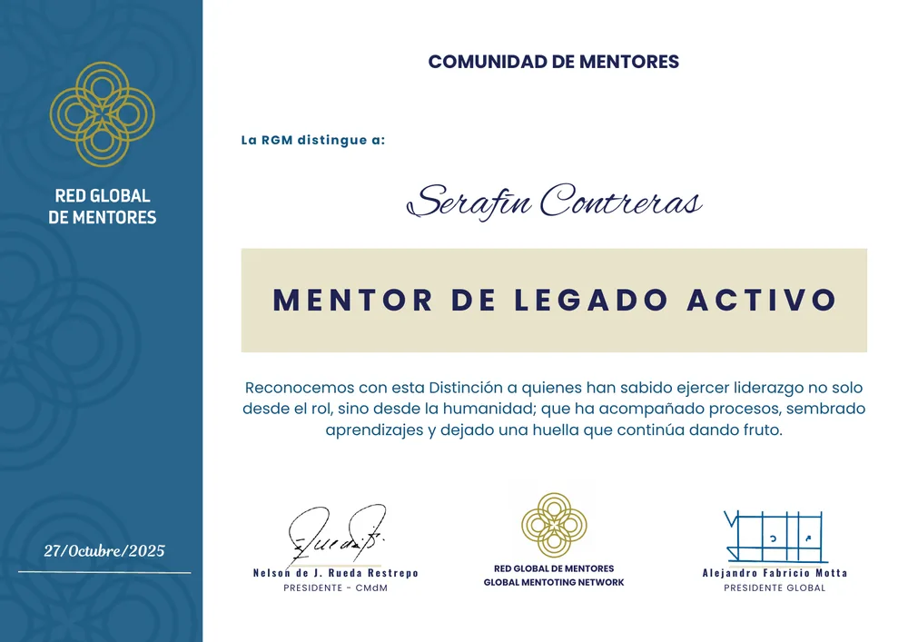
Ver diploma (PDF)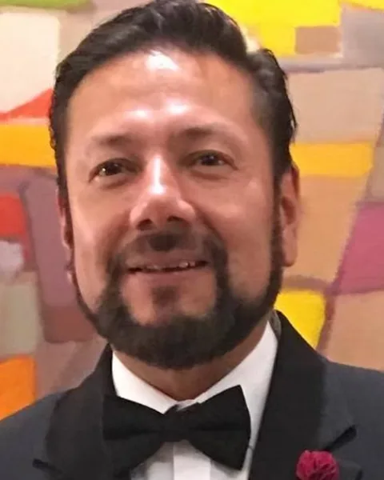
Jhonny Dávila
Equador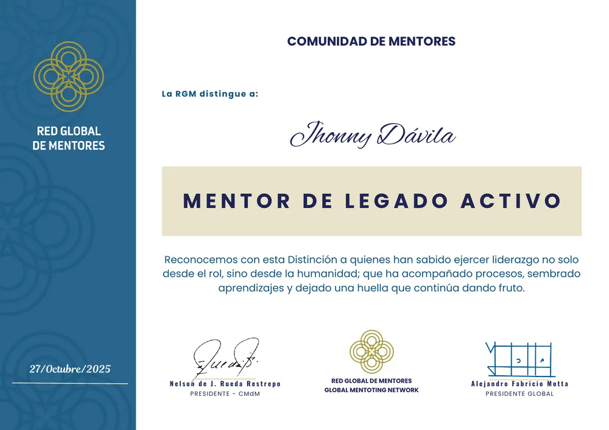
Ver diploma (PDF)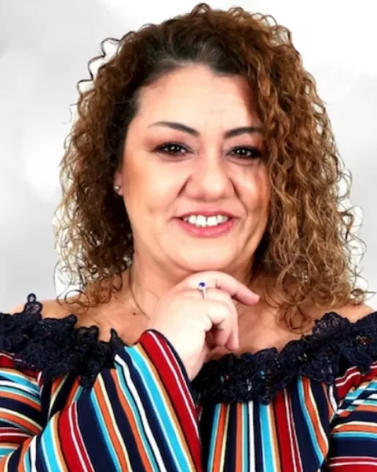
Leticia Centurion
República DominicanaVer diploma (PDF)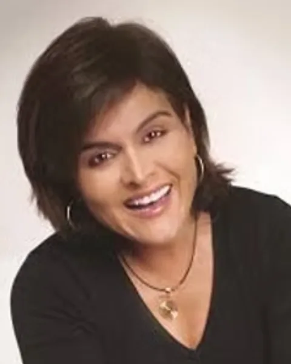
Lina Betancur
Estados UnidosVer diploma (PDF)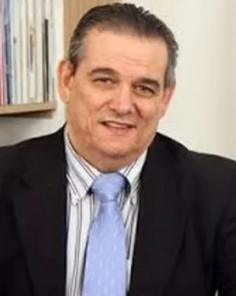
Roberto Cerrada
EspanhaVer diploma (PDF)Rosalinda Pizarro
MéxicoVer diploma (PDF)Javier Garcia Delgado
Bolívia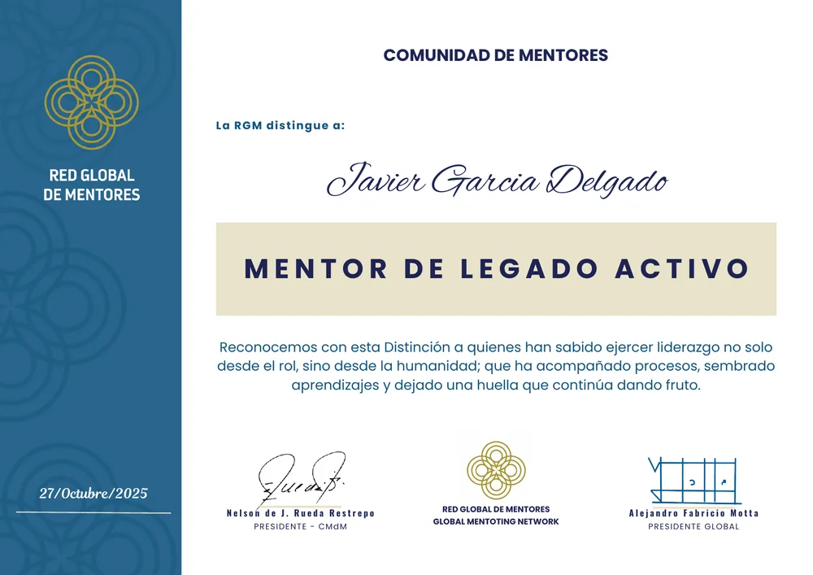
Ver diploma (PDF)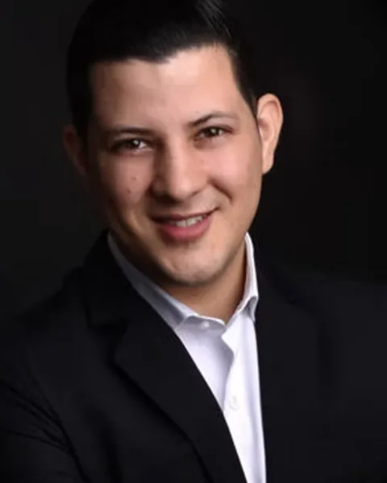
Walter Terán
Peru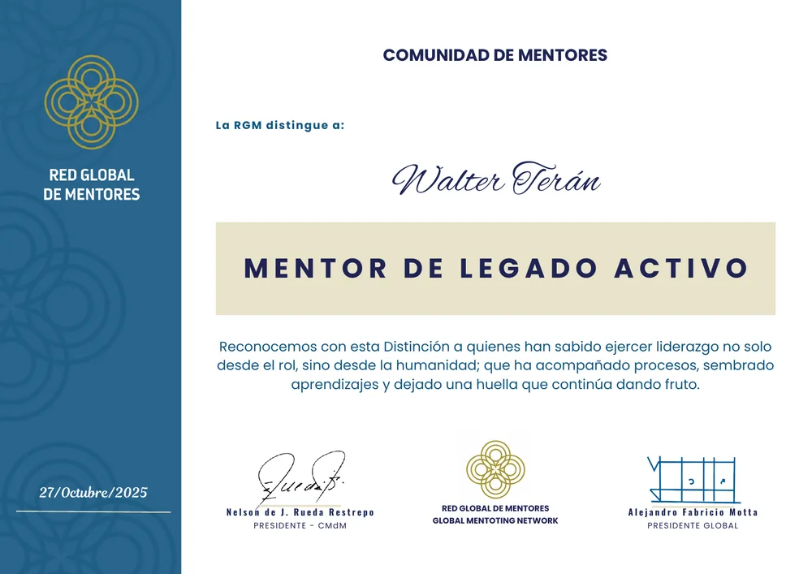
Ver diploma (PDF)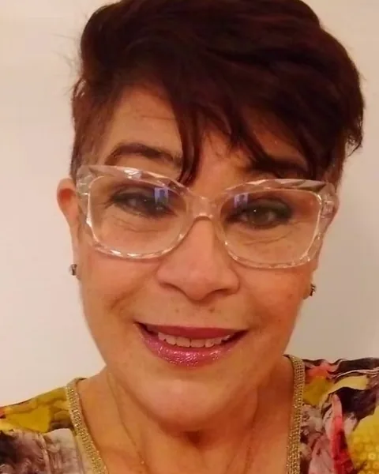
Lasca Ducas Yáñez
VenezuelaVer diploma (PDF)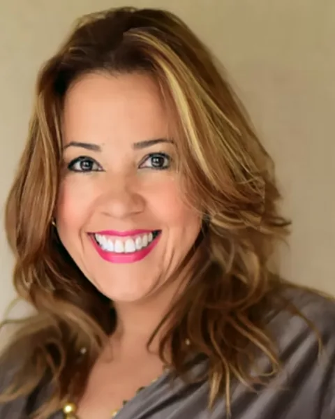
Verónica Sosa
BélgicaVer diploma (PDF)José Angel Muñoz
Costa Rica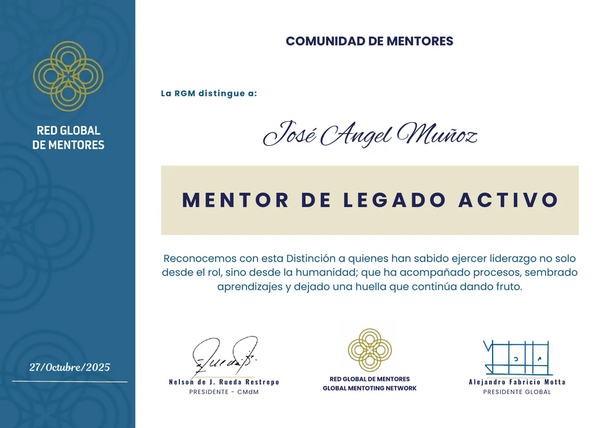
Ver diploma (PDF)